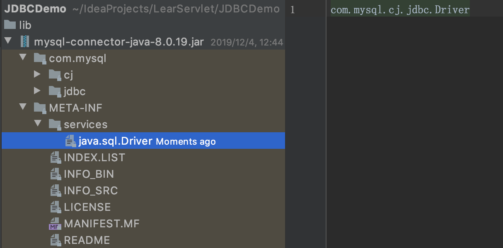

常用类
DriverManager
DriverManager主要用来加载驱动.
注: MySQL老的驱动类使用com.mysql.jdbc.Driver, 但8.x之后建议更换为 com.mysql.cj.jdbc.Driver
Class.forName("com.mysql.cj.jdbc.Driver");就是把com.mysql.cj.jdbc.Driver这个类的字节码通过类加载器加载到内存
源代码:
public class Driver extends NonRegisteringDriver implements java.sql.Driver {
public Driver() throws SQLException {
}
static {
try {
DriverManager.registerDriver(new Driver());
} catch (SQLException var1) {
throw new RuntimeException("Can't register driver!");
}
}
}
MySQL5之后, 加载MySQL驱动的这句代码Class.forName("com.mysql.cj.jdbc.Driver");可以省略不写, 因为在META-INF/services/java.sql.Driver文件中已描述的驱动类:

一般开发时, 建议还是写上
获取数据库连接:
static Connection getConnection(String url, String user, String password)
- url: 连接路径, 每个数据库都不一样, 以MySQL为例:
- 语法
jdbc:mysql://IP(域名):端口/数据库名称?参数 - 示例
jdbc:mysql://127.0.0.1:3306/daliu?characterEncoding=utf-8&useSSL=false - 细节 如果是本机MySQL, 可以省略IP及端口
jdbc:mysql:///daliu?characterEncoding=utf-8&useSSL=false
- 语法
- user: 用户名
- password: 密码
Connection
Connection是数据库连接对象, 代表与特定数据库的连接(会话), 每一个Connection代表一个物理连接会话
功能:
- 获取执行sql的对象
Statement stmt = conn.createStatement()PreparedStatement stmt = conn.prepareStatement(String sql)
- 管理事务
- 开启事务
void setAutoCommit(boolean autoCommit)设置false即代表开启事务 - 提交事务
void commit() - 回滚事务
void rollback() - Savepoint setSavepoint()
- Savepoint setSavepoint(String name)
- void setTransactionIsolation(int level)
- void rollback(Savepoint savepoint)
- 开启事务
Statement
public interface Statement extends Wrapper, AutoCloseable
- 作用: 用于执行静态SQL语句并返回其生成的结果的对象
- 注意事项: Statement只作用于静态SQL, 默认情况下, 每个Statement对象只能有一个ResultSet对象同时打开. 因此, 如果一个ResultSet对象的读取与另一个对象的读取交错, 则ResultSet对象必须由不同的Statement对象生成.
boolean execute(String sql)执行任意给定的SQL语句, 如果第一个结果是ResultSet对象, 则返回true, 否则返回false(比如更新或没有结果)int executeUpdate(String sql)执行给定的SQL语句, DML(insert, update, delete) 和 DDL(create, alter, drop), 返回的int值表示影响的行数, 比如update student set score=80.0, 只影响原来score不是80.0的行数ResultSet executeQuery(String sql)执行DQL(select)查询语句